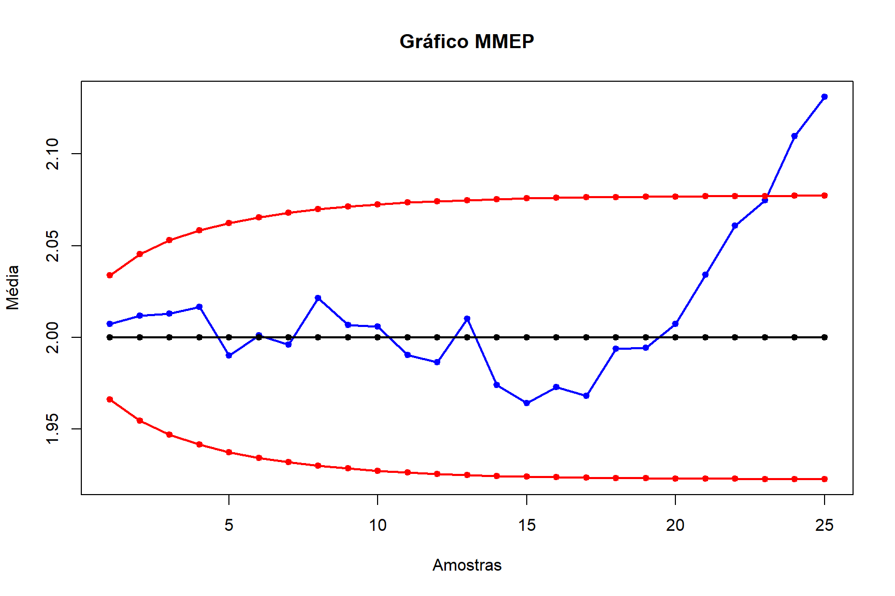

O presente documento visa trazer as resoluções da terceira lista de exercícios da disciplina MATD64 - Controle Estatístico de Processos (CEP), trabalhando com os gráficos de controle de CUSUM a fim de se identificar as condições dos processos baseados nas amostras disponibilizadas nos bancos de dados fornecidos e problemas propostos.
Exercício 1
Exercício 1. Vinto e cinco amostras de tamanho n = 4 sobre o diâmetro (em milímetros, mm) de parafusos utilizados em fixação interna rígida, são exibidas na tabela abaixo. Suponha que o valoralvo do diâmetro seja \(\mu_0\) = 2 mm e que o desvio-padrão seja \(\sigma\) = 0,25 mm. Estabeleça e aplique um Cusum tabular para detectar rapidamente uma mudança de 1\(\sigma\) na média do processo. Interprete os resultados.
Reconsidere os dados do Exercício 1. Estabeleça um gráfico de controle MMEP com \(\lambda\) = 0,1 e \(\gamma\) = 2,7. Use os valores de referência \(\mu_0\) = 2 e \(\sigma\) = 0,25. Compare os resultados obtidos com o Cusum.
Solução:
Mostrar Código
# m = número de amostras observadas. # n = número de observações de cada amostra, se as amostras forem balanceadas ou# n = vetor com o nœmero de observações de cada amostra.# mi = especificação para a média do processo.# sigma = especificação para o desvio-padrão do processo.# lambda = constante de suavização entre 0 e 1 (sugestão: use 0.05, 0.1 ou 0.2).# gamma = constante de significância dos limites de controle (sugestão: use 3). # y = vetor com as observações, ordenadas por amostra, da variável observada.MMEP=function(m,n,mi,sigma,lambda,gamma,y){if(length(n)==1){if (n >1) { matdados=matrix(y,m,n,byrow=T) media=apply(matdados,1,mean,na.rm=T) } else media=y } else { matdados=matrix(NA,m,max(n)) k=1for (i in1:m) {for (j in1:n[i]) { matdados[i,j]=y[k] k=k+1 } } media=apply(matdados,1,mean,na.rm=T) } W=numeric(m); W[1]=lambda*media[1]+(1-lambda)*mifor (i in2:m) { W[i]=lambda*media[i]+(1-lambda)*W[i-1] } LIC=numeric(m) LSC=numeric(m) if(length(n)==1) {for (i in1:m) { fator =(lambda*sigma^2)/((2-lambda)*n) ep=gamma*sqrt(fator*(1-(1-lambda)^(2*i))) LIC[i]=mi-ep LSC[i]=mi+ep } } else {for (i in1:m) { fator =(lambda*sigma^2)/((2-lambda)*n[i]) ep=gamma*sqrt(fator*(1-(1-lambda)^(2*i))) LIC[i]=mi-ep LSC[i]=mi+ep } } amostra=cbind(seq(1,m),seq(1,m),seq(1,m),seq(1,m)) LCMM=cbind(W,LIC,LSC,rep(mi,m))matplot(amostra,LCMM,type="o",ylab="Média",xlab="Amostras",main="Gráfico MMEP",col=c("blue","red","red","black"),ylim=c(min(LCMM),max(LCMM)),pch=20, lty=1, lwd=2)}MMEP(m, n, mi, sigma, 0.1, 2.7, x)

Exercício 3
Trinta amostras de tamanho unitário foram coletadas para estabelecer controle sobre um processo. Os seguintes dados foram levantados:
Considere \(\mu_0\) = 100 e \(\sigma\) = 10. Estabeleça os seguintes gráficos de controle MMEP:
\(\lambda\) = 0,1 e \(\gamma\) = 3
\(\lambda\) = 0,2 e \(\gamma\) = 3
\(\lambda\) = 0,4 e \(\gamma\) = 3
Discuta o efeito de \(\lambda\) sobre o comportamento dos limites de controle.
Solução:
Exercício 4
(Montgomery, 2013) A chemical engineer wants to set up a control chart for monitoring the occurrence of failures of an important valve. She has decided to use the number of hours between failures as the variable to monitor. Table 7.14 shows the number of hours between failures for the last twenty failures of this valve. Figure 7.20 is a normal probability plot of the time between failures, and Figure 7.21 is a normal probability plot of the transformed time between failures
(Montgomery, 2013) Um engenheiro químico deseja montar um gráfico de controle para monitorar a ocorrência de falhas de uma válvula importante. Ela decidiu usar o número de horas entre as falhas como a variável a ser monitorada. A Tabela 7.14 mostra o número de horas entre falhas para as últimas vinte falhas desta válvula. A Figura 7.20 é um gráfico de probabilidade normal do tempo entre falhas e a Figura 7.21 é um gráfico de probabilidade normal do tempo transformado entre falhas
Com base no teste de normalidade realizado é possível concluir a existência de normalidade, através da não rejeição da hipótese nula (\(H_0\)) que afirma normalidade dos dados. O resultado do teste é confirmado através dos gráficos gerados, sendo possível identificar uma certa simetria entre os dados pelo Histograma bem como a normalidade por meio do QQ Plot.
Tendo em vista que a quantidade de observações por amostra é igual a 1, o gráfico Gráfico R é o mais recomendado para análise solicitada.